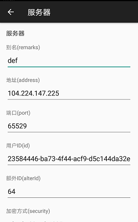
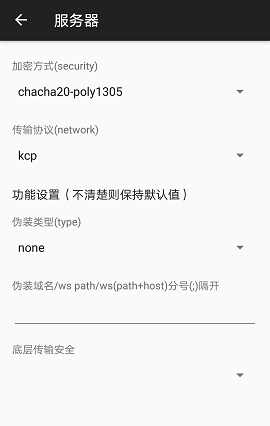
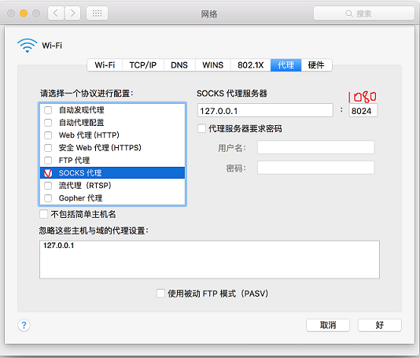

这里介绍Windows、安卓手机以及苹果手机和苹果电脑的科学上网方法。
使用本方法之前，先退出国产杀毒软件。比如360，金山毒霸之类的。
一、Windows客户端
1.下载客户端并解压
下载地址
2.配置文件下载
下载地址
3.用第二步下载的config.json文件替换解压后文件夹下面的同名文件。
4.打开解压后的文件夹，双击 v2ray.exe，看到黑窗口说明启动成功。
5.然后打开火狐(FireFox)浏览器(建议更新到最新版)， 点右上角 打开菜单 --> 选项，最下面 网络代理, 点 设置...

然后就可以访问google, youtube之类的网站了。
谷歌浏览器(Chrome)需要下载插件 Falcon Proxy，注意安装插件需要能翻墙，如果不知道怎样安装插件请使用火狐(Firefox)浏览器。
点击右上角插件图标

点 【添加... 】 增加如下配置并保存

点如下开关，启动代理

二、安卓手机/平板 客户端
下载 V2RayNG 安装完成后，修改服务器配置信息如下，点右上角 对勾 保存。
如果安卓市场找不到V2RayNG，可以点 这里 下载。 备用版本

上图中的 用户ID 会单独发，请复制 粘贴。

如上图配置好之后，点击左下角画斜杠的纸飞机，变成没有斜杠的样子
然后打开手机浏览器就可以访问google, youtube之类的网站了。
三、苹果手机iPhone/平板iPad
App Store 下载 Kitsunebi
参数设置 参考上面的安卓。
四、苹果电脑Mac系统 下载
配置文件下载地址
解压后用config.json文件替换文件夹下的同名文件，然后打开v2ray，设置socks代理，即可通过浏览器访问google。
Mac系统设置全局socks代理方法如下 选择 系统设置(System Preferences)，在 “Internet & Wireless” 下面选择 网络“Network”
